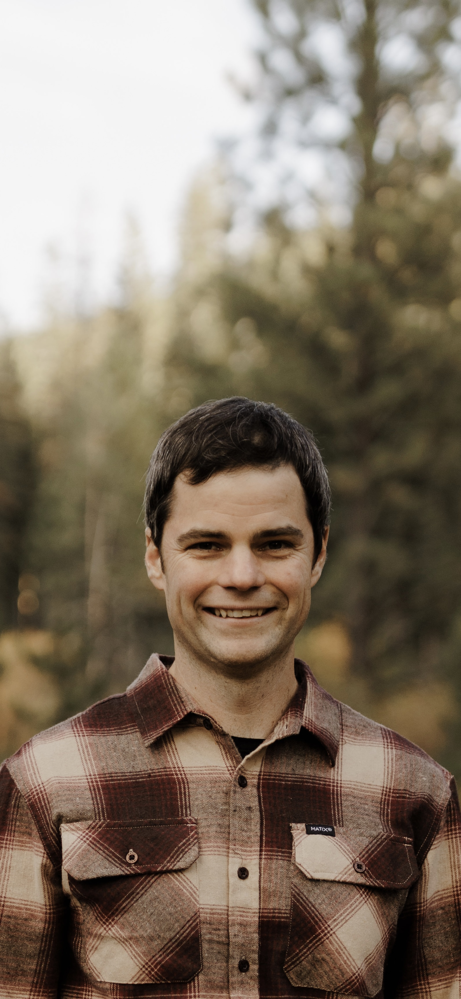

I help clients understand what modern geospatial tools can actually do for their work, then deliver it.

I've been working in remote sensing and surveying for over 15 years. What keeps me in it is the technical complexity. The data is deep, the problems are real, and there's always more you can do with it.
LiDAR, photogrammetry, thermal and multispectral data can do a lot more than most workflows allow for. Redside exists to push that further.
Getting my PLS was intentional. Geospatial data is only as useful as the trust behind it, and the license is how I can certify the work. It also gave me the foundation to think carefully about accuracy, coordinate systems, and projections in a way that makes datasets both reliable and usable.
UAS is a field I'm heavily invested in. The ability to capture a site repeatedly over time has changed what's possible for projects that couldn't afford traditional survey campaigns. I love applying that to infrastructure and natural resource work alike, especially watershed monitoring.
When I'm not working, I'm outside with my family. Rafting, mountain biking, camping, fishing. That's the environment this company is built around.